agatha christie - აგათა კრისტი
ინგლისელი დეტექტიური ჟანრის მწერალი
დაიბადა 1890 წ-ს, 15 სექტემბერს
გარდაიცვალა 1976 წ-ს, 12 იანვარს
............................................................................
ესრკულ პუარო
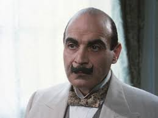მის მარპლი
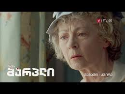.....................................................................................
"ლურჯი მატარებლის საიდუმლო"
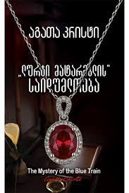"ლორდი ეჯვერის მკვლელობა"
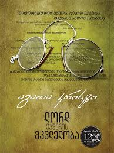"მკვლელობა აღმოსავლეთის ექსპრესში"
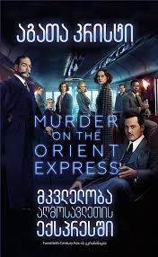"ტრაგედია სამ აქტად"
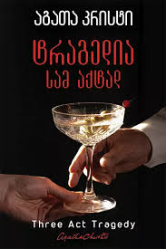"საფრთხე ენდჰაუსში
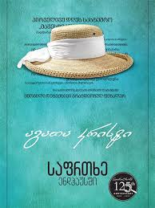"სიკვდილი ღრუბლებში"
"მკვლელობა ანბანის მიხედვით"
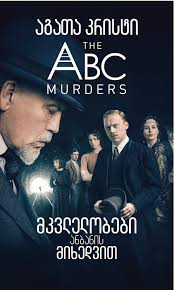"კარტი მაგიდაზე"
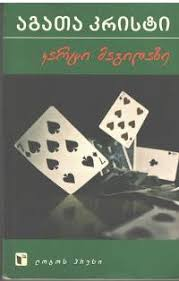"სიკვდილი ნილოსზე
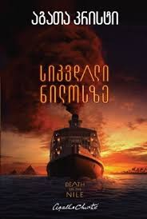"ერკიულ პუაროს შობა"
"ბოროტება მზისქვეშეთში"
"გვამი ბიბლიოთეკაში"
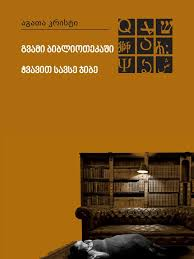"ხუთი გოჭი"